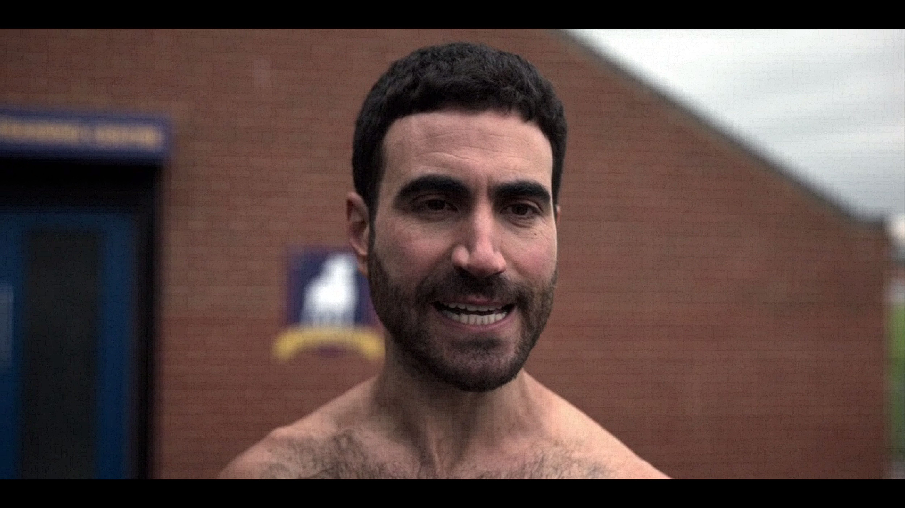
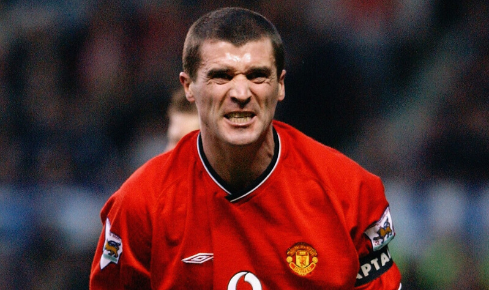
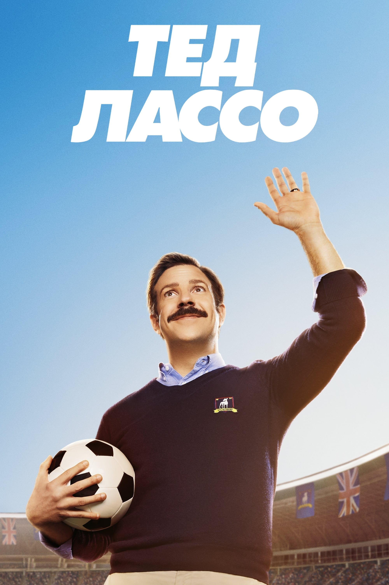
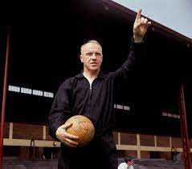
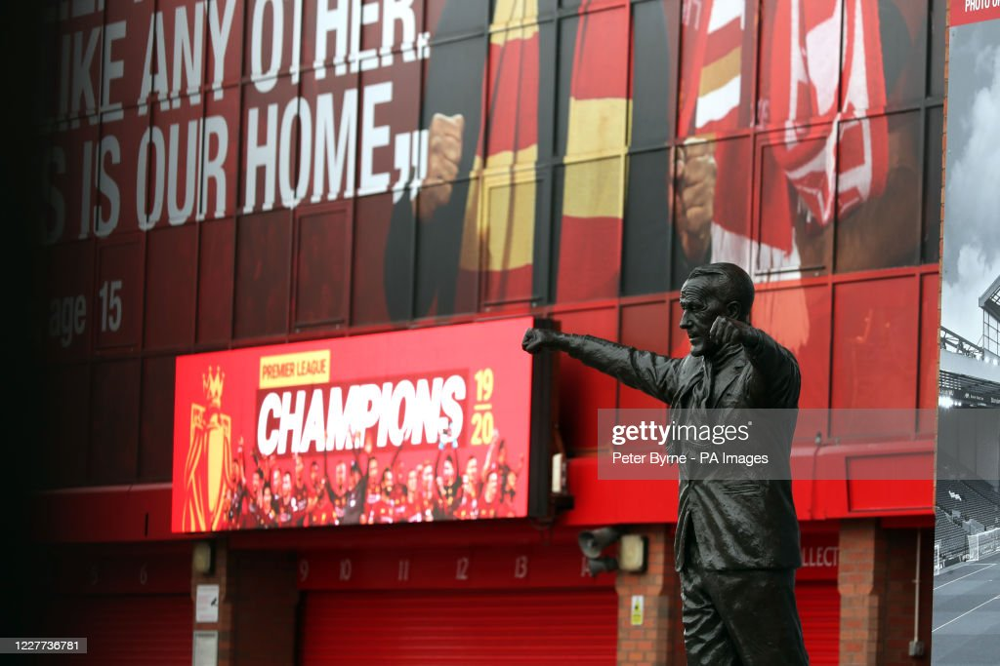

"Тедд Лассо: Американский взгляд на классический английский футбол"
интересные фактыдругие факты
ссылкa на сериал
Hесколько интересных фактов и сравнений из сериала "Тедд Лассо":
-
Сходства между персонажами и реальными футболистами
Рой Кент, один из ключевых персонажей в "Тед Лассо", часто напоминает стереотипного "старого война" на футбольном поле. Он изображен как игрок с огромным опытом, глубоко заботящийся о команде, но при этом он жёсткий, грубый и скептически настроен к новым методам.Многие фанаты и критики замечали сходства между Роем Кентом и реальными футболистами. В частности c Роем Кином: Ирландским футболистом, который известен своим огненным характером и страстью на поле. Кин, также как и Кент, был ключевым игроком для своей команды и часто выступал в роли капитана.
------------------------------------------------Рой Кент---------------------------------------------------------------------------------------------Рой Кин-----------------------------------------------  -
Постер первого сезона
Постер к первому сезону "Тедд Лассо" пародирует знаменитую фотографию менеджера"Ливерпуля" Билла Шенкли . Это показывает, насколько создатели уважают реальный футбол и его историю.На самом деле, Билл известен иным позированием, именно так его и изобразили на статуе возле стадиона "Энфилд" в Ливерпуле.
------ Тедд Лассо постер ------ ------------------ Билл Шенкли --------------------------- ------------------------------------------- статуя Биллу Шенкли ------------------------------------  
другие факты:
- Гимн "Ливерпуля": В одной из серий играет гимн "Ливерпуля" - "You'll Never Walk Alone", что придаёт особую атмосферу и создает связь с реальным миром футбола.
- Тренировочный метод Тедда: В сериале Тедд Лассо использует нестандартные методы тренировки, в чем-то напоминая реальные педагогические эксперименты некоторых тренеров. Например, его подход к укреплению духа команды и работе над психологией игроков напоминает методы Юргена Клоппа.
- Референс к "Лестеру": История "AFC Richmond", аутсайдера, который пытается добиться успеха, напоминает реальную историю "Лестер Сити", который сенсационно выиграл Премьер-лигу.
- Фанатская культура: Агрессивное отношение болельщиков к Тедду и его команде напоминает сложную и страстную культуру футбольных фанатов по всему миру.
- Медийное давление: Постоянное внимание СМИ к действиям Тедда и его команды отражает реальное
давление,
которому
подвергаются профессиональные футбольные тренеры.
Вот некоторые из них:- The Sun
- The Independent
- Sky Sports
- и другие
- Владельцы клубов: Персонаж Ребекки Уэлтон, владелицы "AFC Richmond", может напомнить реальных владельцев футбольных клубов, которые иногда принимают не самые популярные решения.
- Награды: Сериал и его актерский состав были номинированы на множество наград, и Джейсон Судейкис получил премию "Эмми" за лучшую мужскую роль в комедийном сериале.
- Фан-клубы: Благодаря своей популярности, появились фан-клубы и группы поддержки Теда Лассо по всему миру.
- Рецепты печенья: Печенье, которое Тед делает для Ребекки, стало популярным, и многие пытались воссоздать его рецепт дома.
- Татуировки: Некоторые фанаты были настолько вдохновлены сериалом, что делали татуировки с изображениями и цитатами из "Тед Лассо".
- Настроение: Сериал смешивает чувства позитивности и оптимизма, что делает его особенно привлекательным в тяжёлые времена.
Сериал "Тед Лассо" быстро завоевал популярность и стал любимцем многих зрителей благодаря своему уникальному
счетанию
юмора, драмы и искренности.